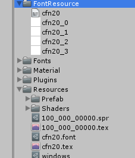
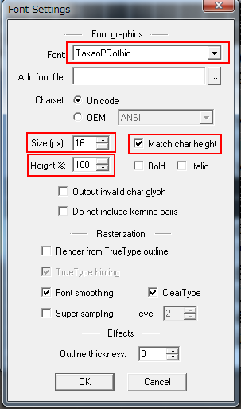
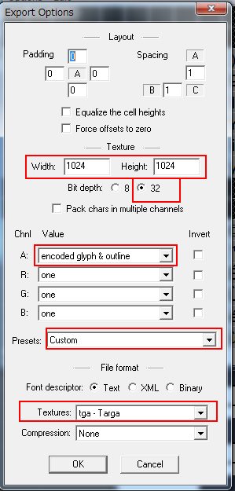

フォントについて¶
最大ビットマップフォント４枚を一つのフォントとして扱えます。
ただし、これら４枚のビットマップをアセット化する際に、ビットマップファイルのα成分のみを参照します。 ４枚のα成分を一枚のテクスチャの(R,G,B,A)成分にそれぞれマッピングし保存します。
４枚を超えるテクスチャを一つのフォントデータとして扱うことができません。
リソースデータとして作成¶
Assets/KsSoft/フォルダの下に、FontResourceというフォルダを作ります。
そのフォルダの下に FiveCC で命名したテキストファイルとビットマップファイルを置きます。
例えば、cfn20というフォントを作りたいときは、次のようなファイルを用意し、指定の場所に置きます。
cfn20.fnt
cfn20_0.png
cfn20_1.png
cfn20_2.png
cfn20_3.png
この状態でcfn20.txtを選択し、[右クリック]→[Export]を選ぶと、Resourcesフォルダの下に次のようなファイルが生成されます。
cfn20.font
cfn20.tex
以上の手順で、cfn20というフォントがアプリケーション内で使用可能になります。

アセットバンドルデータとして作成¶
Assets/KsSoft/のフォルダの下に、Fontsというフォルダを作ります。
そして、アセットバンドルIDとして出力したいフォルダを作り、そのフォルダの下に FiveCC で命名したテキストファイルとテクスチャファイルを置きます。
例えば、000_001_00000.unity3d(これがデフォルトのビットマップフォントアセットバンドルのIDです)のfn16というフォントを作りたいときは、次のようなファイルを用意し、指定の場所に置きます。
000_001_00000/fn16/fn16.fnt
000_001_00000/fn16/fn16_0.png
000_001_00000/fn16/fn16_1.png
000_001_00000/fn16/fn16_2.png
000_001_00000/fn16/fn16_3.png
また、複数のフォントを内包したいときは、同じ手順で複数ファイルを配置しておきます。
準備ができましたら、[Tools]->[KsSoft]->[Export Fonts]を実行してください。
以下のアセットバンドルが生成されます。
assetbundles/Windows/000_001_00000.unity3d
このアセットバンドルの中に必要なフォントデータがすべて格納されています。

注釈
デフォルト値を変更したいときは、 こちら を参考ください。
多言語対応¶
使用する言語に応じて、ビットマップフォントを読み替えることができます。
デフォルトで読み込むビットマップフォントは、000_001_00000.unity3dで固定されています。
起動時のロケールに応じて、対応する000_001_XXXXX.unity3dが存在するとき、そちらを優先して読み込みます。
XXXXXに入るロケールIDは、以下の表を参照ください。
000_001_00000 |
Default |
デフォルト |
|
000_001_00001 |
AR |
Arabic |
アラビア語 |
000_001_00002 |
EU |
Basque |
バスク語 |
000_001_00003 |
BE |
Belarusian |
ベラルーシ語 |
000_001_00004 |
BG |
Bulgarian |
ブルガリア語 |
000_001_00005 |
CA |
Catalan |
カタロニア語 |
000_001_00006 |
ZH |
Chinese |
中国語 |
000_001_00007 |
CS |
Czech |
チェコ語 |
000_001_00008 |
DA |
Danish |
デンマーク語 |
000_001_00009 |
NL |
Dutch |
オランダ語 |
000_001_00010 |
EN |
English |
英語 |
000_001_00011 |
ET |
Estonian |
エストニア語 |
000_001_00013 |
FI |
Finnish |
フィンランド語 |
000_001_00014 |
FR |
French |
フランス語 |
000_001_00015 |
DE |
German |
ドイツ語 |
000_001_00016 |
EL |
Greek |
ギリシャ語 |
000_001_00017 |
HE |
Hebrew |
ヘブライ語 |
000_001_00018 |
HU |
Hungarian |
ハンガリー語 |
000_001_00019 |
IS |
Icelandic |
アイスランド語 |
000_001_00020 |
ID |
Indonesian |
インドネシア語 |
000_001_00021 |
IT |
Italian |
イタリア語 |
000_001_00022 |
JA |
Japanese |
日本語 |
000_001_00023 |
KO |
Korean |
韓国語 |
000_001_00024 |
LV |
Latvian |
ラトビア語 |
000_001_00025 |
LT |
Lithuanian |
リトアニア語 |
000_001_00026 |
NO |
Norwegian |
ノルウェー語 |
000_001_00027 |
PL |
Polish |
ポーランド語 |
000_001_00028 |
PT |
Portuguese |
ポルトガル語 |
000_001_00029 |
RO |
Romanian |
ルーマニア語 |
000_001_00030 |
RU |
Russian |
ロシア語 |
000_001_00031 |
HR |
SerboCroatian |
セルビアクロアチア語 |
000_001_00033 |
SL |
Slovenian |
スロベニア語 |
000_001_00034 |
ES |
Spanish |
スペイン語 |
000_001_00035 |
SV |
Swedish |
スウェーデン語 |
000_001_00036 |
TH |
Thai |
タイ語 |
000_001_00037 |
TR |
Turkish |
トルコ語 |
000_001_00038 |
UK |
Ukrainian |
ウクライナ語 |
000_001_00039 |
VE |
Vietnamese |
ベトナム語 |
000_001_00040 |
ZS |
ChineseSimplified |
中国語簡体字(simplified) |
000_001_00041 |
ZT |
ChineseTraditional |
中国語繁体字(traditional) |
000_001_00100 |
AF |
Afrikaans |
アフリカ語 |
BMFontによるフォントデータ作成方法¶
BMFont(Bitmap Font Generator) を使ってビットマップフォントを作る方法を紹介します。
ビットマップフォントの作成¶
■Font Settings
まずは使用するフォントを選択します。メニューから[Options]→[Font Settings]を選択します。
次にフォントの種類とフォントサイズを選びます。
[Match char height]にはチェックを入れておいてください。
[Hieght%]には100を入れておきます。
■Export Options
次にメニューから[Options]→[Export Options]を選択してExportの設定を行います。
まずは以下の赤枠の部分の値を変更します。
■含める文字を選択
次にビットマップフォントに含める文字を指定します。
■確認
設定された項目にそって正しく出力されるか確認します。メニューから[Options]→[Visualize]を選び、プレビューします。
テクスチャが４枚以内に収まっているかを確認します。
もし1枚に全て収まっているならビットマップサイズが4枚になるようにテクスチャサイズを調整してみるとデータサイズを軽くできる可能性があります。
■出力
これで設定は完了です。
メニューから[Options]→[Save bitmap font as...]を選択してビットマップを出力します。
ファイルは、 FiveCC を使って名前を付けてください。
最後に、出力されたfntファイルをtxtファイルにリネームするとビットマップフォントに必要なファイルがすべて揃います。